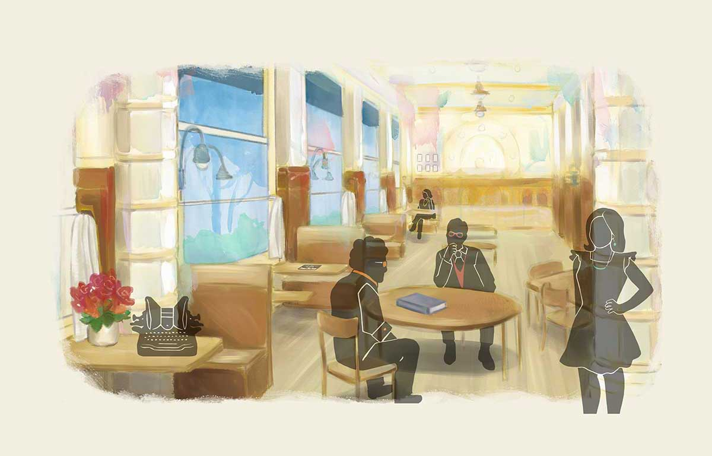

<router-outlet></router-outlet>
<app-header></app-header>
<div class="cafe-container">
  <div class="image-wrapper">
    

    <!-- modals -->
    <div class="typewriter eye" routerLink="typewriter">
      <button mat-button color="primary" aria-label="Writing contest">
        <p>Writing <br> Contest</p>
      </button>
    </div>
    <div class="window eye" routerLink="window">
      <!-- <button
        mat-icon-button
        color="primary"
        class="visibility"
        aria-label="Look through the window"
      >
        <mat-icon>visibility</mat-icon>
      </button> -->
    </div>
    <div class="wall-minor-authors eye" routerLink="wall-of-exceptionally-minor-authors">
      <button mat-button color="primary" aria-label="Wall of Minor Authors">
        <p> The Wall <br>
          <em>of minor authors</em>
        </p>
      </button>
    </div>

    <div class="bangs eye accent" routerLink="john_kendrick_bangs"></div>
    <div class="character2 eye accent" routerLink="maudy_gammitt"></div>
    <div class="character3 eye accent" routerLink="gary_katsarida"></div>
    <div class="character4 eye accent" routerLink="josef_wozek"></div>
    <div class="character5 eye accent" routerLink="else_lasker_schuler"></div>
    <div class="character6 eye temp" routerLink="character6"></div>
    <div class="arbiter eye temp" routerLink="arbiter"></div>
    <!-- modals -->
  </div>
</div>
<app-footer></app-footer>